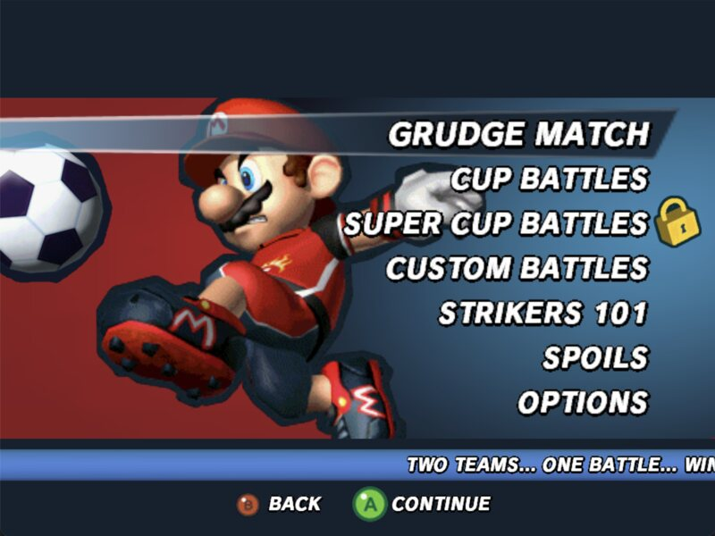
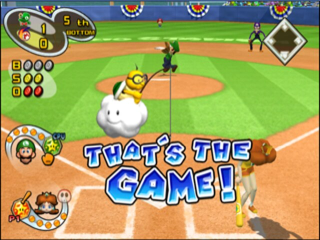
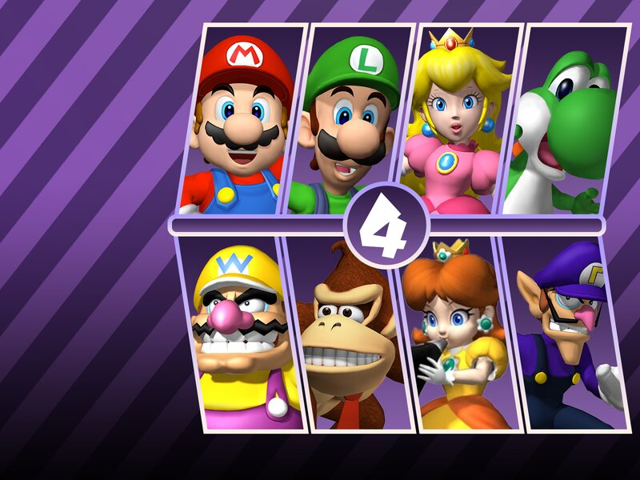

gamecube
GameCube discs, decompiled and rebuilt for WebAssembly and WebGPU. No emulator: the games themselves, running natively in your browser tab. Pick a disc.
-
2005

Super Mario Strikers
Five-a-side soccer with shells, bananas and super strikes.
- 1–4 players
- online
- touch
-
2005

Mario Superstar Baseball
Star pitches, chemistry, and Mario Stadium under the lights.
- 1–2 players
- online
- touch
-
2002

Mario Party 4
The board game, the minigames, and the friendships they end.
- 1–4 players
- online
- touch